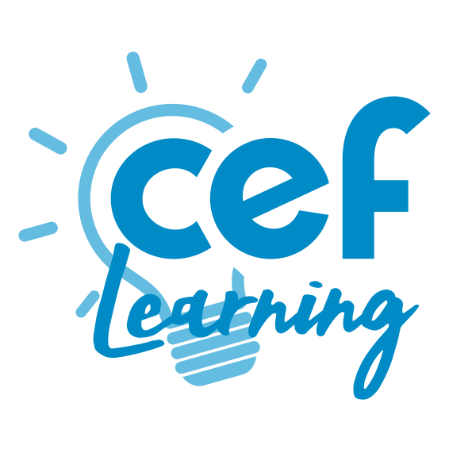

Quel organisme choisir pour passer un CAP ou un BTS à distance ? Nous comparons 14 écoles sur les contenus, l'accompagnement, le prix et les solutions de financement.





Deux écoles à distance, un seul diplôme d'État à la sortie.


Choisissez deux écoles, nous affichons leurs notes sur nos cinq critères, calculées depuis les programmes publiés et les avis élèves de l'année.
Notes sur 10, issues de nos relevés de septembre 2026.
Cuisine, bâtiment, mécanique ou santé, les meilleures écoles ne sont jamais les mêmes d'un métier à l'autre.
Note globale sur 10, moyenne pondérée de nos cinq critères, tous métiers confondus. Le classement bouge à chaque mise à jour des programmes et à chaque nouvelle vague d'avis élèves.
Voir la méthode de notationTout part de données publiques, le programme de chaque école, sa fiche de certification et ce qu'en disent ses élèves.
Volume horaire, nombre de modules, nombre de devoirs corrigés, matériel fourni. Ce qui est écrit sur la fiche, pas ce qui est promis au téléphone.
La certification Qualiopi de l'organisme d'un côté, l'enregistrement du diplôme au Répertoire national des certifications professionnelles de l'autre. Les deux se contrôlent en ligne.
Correction des devoirs, joignabilité des formateurs, aide à la recherche de stage. C'est là que les écarts se creusent, jamais dans la brochure.
Un email par semaine, le classement du mois, les nouveaux comparatifs de formations et les sessions qui ouvrent.
Pas de publicité, désinscription en un clic.